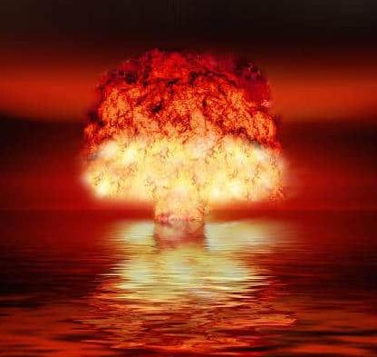

Disaster

Description
This should never have been tried, but here we are.
Ingredients
- human apes
- human flaws
- mechanical errors
- many pieces of information
- thrill seeking & F.O.M.O.
- a mind of one's own that's actually just another mind of many within many out of the many
Steps
- Be anxious.
- Have much to strive for without realizing it.
- Have ittle to strive for while realizing it.
- Be ill-prepared for crises both real and imagined.
- Instead of carefully selecting ideas and acting competently, be a rampant proponent of whatever fad passes for a useful piece of information.
- Refer to communication as some kind of 'battlefield' or 'war'.
- Adhere to rules forged by 'just causes' that used to mean something but are now dead, but while constantly referring to how they are dead so you don't come across as blind and confused enough to believe this horseshit yourself.
- Be like that anyway.
- Don't have any filters and be harmful to yourself and others, but call it 'being free-spirited' or revolutionary or liberating.
- Use the internet quite a lot.
- Don't read, cause it's for nerds.
- Be a mediocre nerd, but don't admit it.
- Don't care about what others think.
- Care very much about what other's might think.
- Smoke and drink 'cause it's legal and not 'real drugs'.
- Be gloomy because of all the things that you can't change but wish to be seen as a victim of.
- Never finish anything
- Finish too quickly.
- Have children and continue the cycle of ignorance and decay.